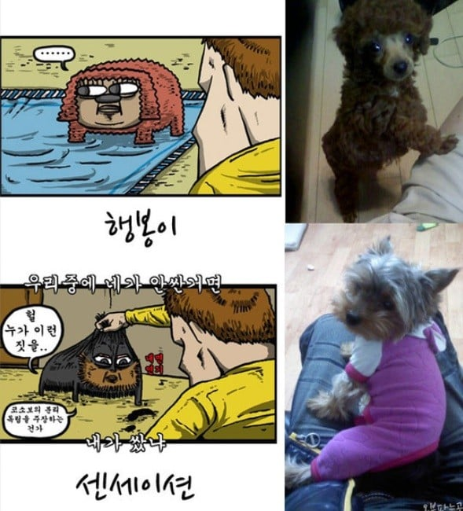
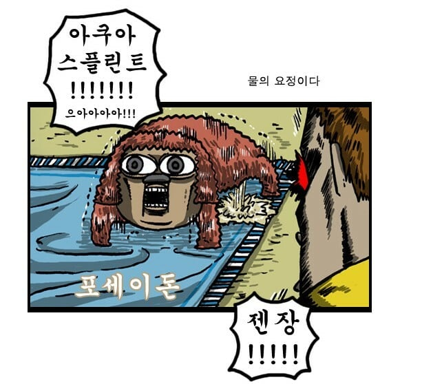
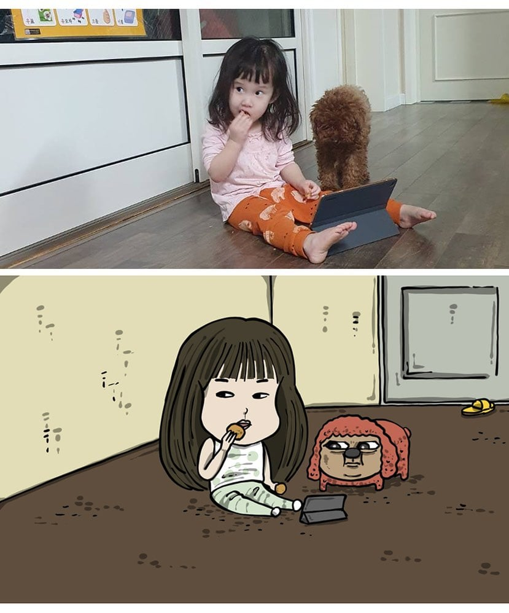
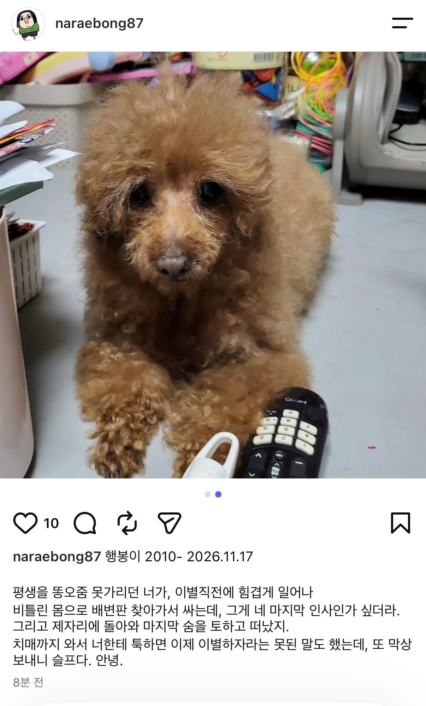

정주고싶지않아
구더기 무서워 장 못담그냐는 말도 있지만
장 버리고 남은 장독대는 아무리 씻어도 결국 남아있는걸
그 남은 독에 새로운 장을 담을 수도 있잖아 전 보다 더 맛있게 담길지 누가 알아
그거 쉽지않음 한번보내고나면 두번할엄두가안난다 진짜
장독대에 향이 안빠지고 남아있잖아 향을 맡으며 그래 그 때 그 장이 기막히게 맛있었지 하며 추억하는거도 나쁘지 않을 수 있어
나를위해 아낌없이 헌신한 반려견의 마지막을 지켜주고 보내주는것이 두고 가는것보다 편하다
슬프고 그립겠지만 두고 가는것 또한 그대로 슬픈일일듯
이래서 동물 안키운다
갔군아 에구..
ㅠㅠㅠ
견생 16년이면 천수 누리다 간거지 진짜 예쁨 많이 받앗나보다 에고
ㅠㅠ멍멍아